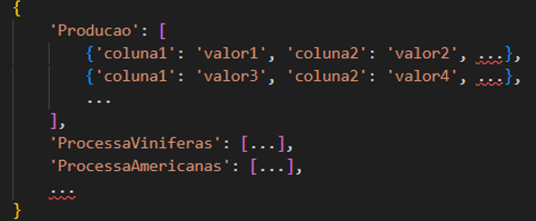
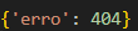

Definição da função request_embrapa:
-
A função request_embrapa é responsável por fazer solicitações HTTP para a API da Embrapa (Empresa Brasileira de Pesquisa Agropecuária) para baixar dados específicos relacionados à viticultura e vinicultura.
-
Ela possui um parâmetro opcional arquivo que determina o tipo de arquivo a ser baixado.
Se nenhum arquivo específico for fornecido, a função baixará todos os arquivos disponíveis.
Parâmetros:
Arquivo (opcional):
Uma string que indica o tipo de arquivo a ser baixado. Se não for fornecido, a função baixará todos os arquivos disponíveis.
Exemplo de Uso:
import requests
import csv
Chama a função sem especificar o arquivo para baixar todos os arquivos disponíveis:
dados = request_embrapa()
Chama a função especificando o arquivo desejado:dados = request_embrapa('Producao')
Retorno:
A função retorna um dicionário contendo os dados baixados.
Se houver um erro durante o processo, o dicionário conterá uma chave erro com o código de erro correspondente.
Exemplo de retorno bem-sucedido:

Exemplo de retorno com erro:
